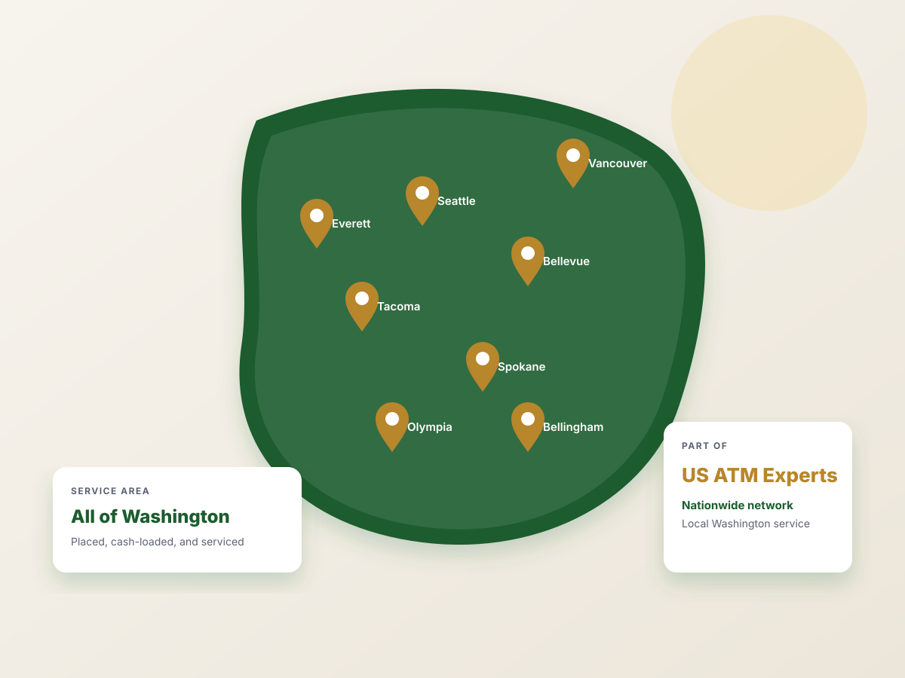

Washington's ATM company for free ATM placement and ATM sales
We install, stock, and monitor a top-of-the-line ATM at your business for $0 — and offer you revenue share options. Or, you buy your own machine and keep 100% of the surcharge revenue.
The no-cost ATM program includes
- Free installation
- We supply and load the cash
- 24/7/365 monitoring
- Revenue share options
ATM solutions for Washington businesses
Whether you want a machine placed for free or want to own your own ATM and keep 100% of the surcharge, we handle every part of the operation.
Free ATM Placement
A turnkey ATM at your dispensary, bar, restaurant, hotel, retail store, or venue at zero cost. We do everything and provide you with fair revenue share options.
Learn about placement →ATM Processing
Daily deposits and real-time online reporting, included free with every ATM we sell or process.
Processing details →ATM Sales
Genmega and Nautilus Hyosung machines with free shipping, free processing, and 100% of the surcharge revenue.
Browse equipment →Reliable machines, backed by second-to-none service
Washington ATM Experts is trusted across Washington by business owners who need an ATM that simply works. We've placed machines in dispensaries, restaurants, bars, hotels, tattoo shops, barbershops, and city facilities, and we back every one with best in class support.
Whether you need free ATM placement in Seattle, a compliant dispensary ATM in Bellevue, ATM processing for a machine you already own, or a new Genmega or Hyosung ATM for your business, one Washington team handles it.
- Free processing and daily cash deposits
- Support with dedicated account reps
- Free shipping & handling on every machine we sell
- State-of-the-art ATMs from Genmega and Hyosung
- Flexible revenue-sharing options to fit your location

Cash still drives sales
Industry data on North American ATM use, and what it means for your register.
From first call to first payout in four steps
Tell us about your location
Give us a call or reach out through the contact button on this page. We'll ask about foot traffic, hours, and space.
Site analysis
We recommend the right machine, surcharge, and withdrawal limit for your customers.
Free install & cash load
We deliver, install, and stock the ATM. You supply a standard 110v outlet.
Get paid monthly
If you opt for a revenue share, you receive your split each month by the 10th of the following month.
Serving businesses across Washington
We place, service, and cash-load ATMs across Washington, from Seattle to Spokane. If your business is in Washington, we can help.
Frequently asked questions
How much does free ATM placement cost my business?
Nothing. With our free placement program we supply the machine, install it, load and manage the cash, and monitor it 24/7. All you need to provide is a standard power outlet.
How much can my location earn from an ATM?
It depends on foot traffic and the surcharge. A typical bar, restaurant, or convenience store doing 100–300 withdrawals a month earns roughly $50–$300 per month in surcharge share, or $1,800–$10,800 over a three-year agreement, based on our actual locations. See the earnings estimates.
Which brands of ATM do you sell?
We're an authorized dealer for Genmega (G2500, Onyx, Onyx-W, Nova) and Nautilus Hyosung (Halo II, MX 2800SE Force, MX 2800T), plus InHand wireless modems. Every machine we sell includes free processing and support.
How do I find a reliable ATM company near me in Washington?
Look for a company that owns its routes, loads its own cash, and answers the phone. Washington ATM Experts is part of the US ATM Experts network, places and services ATMs across Washington, and is an authorized Genmega and Nautilus Hyosung dealer. Call 833.843.3331 and you'll reach our team.
What areas of Washington do you serve?
All of it. We serve the Puget Sound region and communities from Seattle to Spokane, including Seattle, Bellevue, Tacoma, Spokane, Vancouver, Everett, Bellingham, Olympia, Yakima, and Tri-Cities.
Ready to add an ATM to your business?
Call us or send a few details about your location. We'll tell you the same day whether it qualifies for free placement and what you can expect to earn.